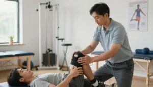

Najbolje metode povećanja pokretljivosti koljena nakon operacije
Operacija koljena može biti vrlo zahtjevna, a oporavak često traje dugo. Poboljšanje pokretljivosti koljena nakon operacije ključno je za povratak normalnom životu.
Dat ćemo vam savjete kako poboljšati pokretljivost koljena nakon operacije.
U ovom članku istražujemo najbolje metode za povećanje pokretljivosti kako biste olakšali svoj oporavak.
Ključni zaključci
- Redovito vježbanje poboljšava pokretljivost koljena.
- Fizioterapija je ključna za brži oporavak.
- Primjena pravilne njege koljena ubrzava proces.
- Zdrav način života podržava oporavak.
- Redoviti pregledi kod liječnika su neophodni.
Razumijevanje operacije koljena i njezin utjecaj na pokretljivost
Kirurški zahvati na koljenu, poput artroskopskih operacija i ugradnje endoproteza, zahtijevaju detaljno razumijevanje oporavka. Operacija koljena može biti potrebna zbog osteoartritisa, ozljeda ili drugih stanja.
Vrste operacija koljena i njihove specifičnosti
Postoji nekoliko vrsta operacija koljena. Svaka ima svoje ciljeve i specifičnosti. Najčešće su artroskopske operacije i ugradnja endoproteza.
Artroskopske operacije
Artroskopske operacije su minimalno invazivne. Liječnik pregledava unutrašnjost zgloba pomoću male kamere. Ove operacije koriste se za popravak ili uklanjanje oštećenja.
Totalna i parcijalna endoproteza koljena
Endoproteza koljena zamjenjuje oštećene dijelove ili cijeli zglob umjetnim komponentama. Ova operacija namijenjena je pacijentima s ozbiljnim osteoartritisom.
Zašto dolazi do smanjene pokretljivosti nakon zahvata
Nakon operacije koljena pokretljivost se smanjuje. To je posljedica fizioloških procesa cijeljenja i formiranja ožiljnog tkiva.
Fiziološki procesi cijeljenja tkiva
Tijelo reagira na kirurški zahvat procesom cijeljenja koji uključuje upalu i remodeliranje tkiva. Taj proces može rezultirati ožiljnim tkivom i adhezijama.
Formiranje ožiljnog tkiva i adhezija
Ožiljno tkivo i adhezije formiraju se kao dio procesa cijeljenja. Mogu ograničiti pokretljivost koljena. Fizikalna terapija može pomoći u smanjenju tog učinka.
Razumijevanje operacije koljena ključno je za oporavak. Rehabilitacija, uključujući Kinetek terapiju, može poboljšati ishod operacije.
Važnost rehabilitacije nakon operacije koljena
Nakon operacije koljena rehabilitacija je iznimno važna. Pomaže da se koljeno vrati u normalnu funkciju. Rehabilitacija nije samo dodatak oporavku, već je temelj za vraćanje pokretljivosti i snage.
Ciljevi rehabilitacijskog procesa u hrvatskom zdravstvenom sustavu
Ciljevi rehabilitacije uključuju jačanje mišića oko koljena, smanjenje boli i poboljšanje funkcionalnosti pacijenta. U Hrvatskoj rehabilitacijski programi pomažu pacijentima da se brže vrate svakodnevnim aktivnostima.
Posljedice nedovoljne rehabilitacije na kvalitetu života
Nedovoljna rehabilitacija može negativno utjecati na kvalitetu života. Može dovesti do:
- Ograničenja pokretljivosti koljena
- Smanjenja funkcionalne sposobnosti
- Povećanja rizika od komplikacija
Dugoročna ograničenja pokretljivosti
Dugoročna ograničenja mogu biti značajan problem. Pacijent može imati poteškoće pri hodu ili penjanju stepenicama. Čak i stajanje može postati izazov.
Utjecaj na radnu sposobnost i svakodnevne aktivnosti
Ograničenja u pokretljivosti mogu utjecati na radnu sposobnost, posebno kod poslova koji zahtijevaju fizički rad. Kupanje, oblačenje i kućanski poslovi postaju zahtjevniji.
Rehabilitacija je ključ uspješnog oporavka koljena. Važno je pratiti strukturirani program koji uključuje vježbe i terapiju kako bi se postigli najbolji rezultati.
Povećanje pokretljivosti Kinetek koljeno, osnove terapije
Nakon operacije koljena Kinetek terapija može značajno poboljšati opseg pokreta i smanjiti vrijeme oporavka. Koriste se specijalizirani uređaji za pasivnu mobilizaciju koljena.
Što je Kinetek terapija i kako funkcionira u kliničkoj praksi
Kinetek terapija pomaže u poboljšanju pokretljivosti zglobova, posebno koljena. Koristi se nakon operacije ili ozljede. Princip se temelji na kontinuiranoj pasivnoj mobilizaciji.
Principi kontinuirane pasivne mobilizacije
Kontinuirana pasivna mobilizacija pomaže u smanjenju boli, sprječava stvaranje ožiljnog tkiva i poboljšava ukupnu pokretljivost zgloba.
Dostupnost Kinetek uređaja u Hrvatskoj
Kinetek uređaji dostupni su u mnogim rehabilitacijskim centrima u Hrvatskoj. Koriste se pod nadzorom fizioterapeuta.
Prednosti kontinuirane pasivne mobilizacije
Kontinuirana pasivna mobilizacija smanjuje bol, poboljšava pokretljivost i brže vraća funkciju koljena.
Znanstveni dokazi učinkovitosti i klinička istraživanja
Brojna istraživanja pokazuju učinkovitost Kinetek terapije i podržavaju je kao sastavni dio rehabilitacijskog plana.
Faze oporavka nakon operacije koljena
Nakon operacije koljena oporavak se dijeli na tri faze. Svaka faza bitna je za potpun oporavak koljena. Razumijevanje ovih faza pomaže u uspješnom oporavku.
Akutna faza (1-2 tjedna)
U akutnoj fazi važno je kontrolirati oteklinu i bol. Također, počinju se izvoditi prve vježbe.
Kontrola otekline i boli
Uporaba leda i podizanje nogu ključne su metode za smanjenje otekline. Lijekovi protiv boli pomažu u upravljanju bolom.
Početne vježbe pokretljivosti
Jednostavne vježbe poput fleksije i ekstenzije koljena počinju se izvoditi odmah nakon operacije.
Subakutna faza (2-6 tjedana)
U subakutnoj fazi opseg pokreta postupno se povećava.
Progresivno povećanje opsega pokreta
Vježbe se postupno intenziviraju. To pomaže u poboljšanju fleksibilnosti i snage mišića oko koljena.
Faza naprednog oporavka (6-12 tjedana)
Ova faza fokusira se na funkcionalni trening. Pacijenti počinju izvoditi aktivnosti poput hodanja i penjanja stepenicama.
Funkcionalni trening i povratak aktivnostima
Pacijenti počinju izvoditi aktivnosti poput hodanja i penjanja stepenicama. Također počinju s laganim sportskim aktivnostima.
Rane vježbe za povećanje pokretljivosti koljena
Nakon operacije koljena važno je što prije početi s vježbanjem. To pomaže u ponovnom uspostavljanju pokretljivosti. Ovdje govorimo o vježbama koje su prve u procesu oporavka.
Pasivne vježbe u prvim danima nakon operacije
U početku su pasivne vježbe ključne. Ne zahtijevaju aktivno sudjelovanje, ali pomažu zglobu.
Asistirana fleksija i ekstenzija
Asistirana fleksija i ekstenzija izvode se uz pomoć fizioterapeuta. Pomažu u smanjenju boli i povećanju opsega pokreta.
Pravilno pozicioniranje noge
Pravilan položaj noge je bitan. Sprječava komplikacije poput kontraktura. Fizioterapeut će vam dati potrebne upute.
Postupno uvođenje aktivnih vježbi
Kad dođe vrijeme, počinjemo s aktivnim vježbama. One jačaju mišiće oko koljena.
Izometrijske kontrakcije kvadricepsa
Izometrijske kontrakcije kvadricepsa vrlo su važne. Stežete mišiće, ali ne pomičete zglob. To jača kvadriceps bez opterećenja koljena.
Aktivno potpomognuti pokreti
Aktivno potpomognuti pokreti izvode se uz pomoć terapeuta. Pomažu u jačanju mišića i povećanju opsega pokreta.
Praćenje napretka i prilagodba intenziteta
Pratite kako se oporavljate i prilagodite vježbanje svojim mogućnostima. Fizioterapeut će vam pomoći da postignete najbolje rezultate.
Fizikalna terapija kao ključni element oporavka
Fizikalna terapija za koljeno nakon operacije iznimno je važna. Naš tim fizioterapeuta pomaže vam da se brzo i kvalitetno oporavite.
Uloga fizioterapeuta u rehabilitaciji koljena
Fizioterapeuti procjenjuju vaše stanje i kreiraju plan oporavka. Ključni su za povratak snage i pokretljivosti koljena.
Metode koje se koriste u kliničkom okruženju
U klinici se koriste razne metode za oporavak koljena. Manualna terapija i mobilizacija tehnike su za poboljšanje pokretljivosti.
Manualna terapija i mobilizacija
Manualna terapija koristi ručne tehnike za smanjenje boli. Mobilizacija koristi nježne pokrete za bolju funkciju zgloba.
Elektroterapija i ultrazvuk
Elektroterapija koristi električne impulse za stimulaciju mišića. Ultrazvuk koristi zvučne valove za ubrzanje cijeljenja i smanjenje upale.
Kako maksimalno iskoristiti fizikalnu terapiju
Kako biste iskoristili terapiju na najbolji način, važno je redovito dolaziti na termine i aktivno sudjelovati u rehabilitaciji.
Komunikacija s terapeutom
Dobra komunikacija s terapeutom je ključna. Obavijestite terapeuta o svim promjenama ili nelagodama.
Redovitost dolazaka na terapiju
Redovit dolazak bitan je za uspjeh. Slijedite savjete terapeuta i ne propuštajte zakazane termine.
Napredne vježbe za povećanje opsega pokreta
Za poboljšanje pokretljivosti koljena nakon operacije važno je uključiti napredne vježbe u rehabilitacijski program. One pomažu u povećanju fleksibilnosti, jačanju okolnih mišića i poboljšanju propriocepcije.
Vježbe istezanja za koljeno
Vježbe istezanja ključne su za poboljšanje fleksibilnosti koljena. Postoje dvije glavne vrste istezanja: statičko i dinamičko.
Statičko istezanje stražnje lože i kvadricepsa
Statičko istezanje uključuje držanje mišića u istegnutom položaju kroz određeno vrijeme. Na primjer, za istezanje stražnje lože sjednite na pod s jednom nogom ispruženom ispred sebe, a drugom savijenom prema unutra. Nagnite se naprijed držeći leđa ravno.
Dinamičko istezanje i mobilizacija
Dinamičko istezanje uključuje pokrete koji istežu mišiće kroz njihov raspon pokreta. Primjerice, zamahivanje nogama naprijed i nazad ili kruženje koljena.
Vježbe jačanja okolnih mišića
Jačanje mišića oko koljena važno je za stabilnost i funkciju zgloba, a konkretne primjere pronaći ćete u vodiču za vježbe za oporavak nakon zamjene zgloba koljena.
Progresivno opterećenje kvadricepsa
Progresivno opterećenje kvadricepsa postiže se vježbama poput čučnjeva ili ekstenzija nogu s opterećenjem.
Jačanje stražnje lože i gluteusa
Jačanje stražnje lože i gluteusa postiže se vježbama poput mostova ili ekstenzija kukova.
Proprioceptivne vježbe za stabilnost
Proprioceptivne vježbe pomažu u poboljšanju ravnoteže i stabilnosti.
Vježbe ravnoteže na nestabilnim podlogama
Vježbe ravnoteže na nestabilnim površinama, poput balans daske ili BOSU lopte, pomažu u poboljšanju propriocepcije i stabilnosti koljena.
Hidrokineziterapija i njezine prednosti
Hidrokineziterapija znatan je napredak u fizikalnoj terapiji. Posebno je korisna za pacijente koji se oporavljaju od operacije koljena. Koristi vodu za rehabilitaciju, stvarajući posebno okruženje za oporavak.
Zašto je voda idealno okruženje za rehabilitaciju koljena
Voda ima brojne prednosti za oporavak koljena. Njezina svojstva omogućuju smanjenje opterećenja na zglob, što je ključno za rane faze oporavka.
Smanjenje opterećenja na zglob
Kad se krećemo u vodi, zglobovi su manje opterećeni. To je važno za sigurno izvođenje vježbi.
Otpor vode kao prirodni trening
Voda pruža otpor koji pomaže u jačanju mišića oko koljena. Time se poboljšava stabilnost i funkcija zgloba.
Specifične vježbe u bazenu za povećanje pokretljivosti
Vježbe u bazenu raznolike su i prilagođene potrebama pacijenata. Hodanje u vodi važna je vježba za pokretljivost koljena.
Hodanje u vodi i vježbe s pomagalima
Postoje i vježbe s pomagalima poput perajama ili utega za vodu. Pomažu u jačanju i povećanju fleksibilnosti koljena.
Dostupnost hidrokineziterapije u hrvatskim rehabilitacijskim centrima
Hidrokineziterapija postaje sve dostupnija u Hrvatskoj. Mnogi centri uključuju bazene u svoje rehabilitacijske programe.
Upravljanje bolom tijekom rehabilitacije
Za uspješan oporavak nakon operacije koljena važno je dobro upravljati bolom. Pravilno upravljanje postoperativnom boli pomaže pacijentima da lakše započnu i održavaju proces rehabilitacije.
Farmakološke metode kontrole boli
Farmakološke metode prva su linija obrane protiv boli nakon operacije. Uključuju različite vrste lijekova.
Analgetici i protuupalni lijekovi
Analgetici poput paracetamola i ibuprofena često se koriste za smanjenje boli. Blokiraju kemijske procese koji uzrokuju bol i upalu.
Lokalni pripravci za smanjenje boli
Lokalni pripravci, poput krema i gelova, mogu olakšati bol na mjestu operacije. Sadrže aktivne sastojke poput lidokaina ili kapsaicina.
Nefarmakološke metode (led, toplina, TENS)
Osim lijekova, postoje i druge metode za upravljanje bolom. Nefarmakološke metode mogu biti korisna nadopuna farmakološkim pristupima.
Pravilna primjena krioterapije
Krioterapija, odnosno terapija hladnoćom, može smanjiti bol i upalu. Važno je koristiti led u intervalima kako bi se izbjeglo oštećenje tkiva.
Kada i kako koristiti toplinske tretmane
Toplinski tretmani mogu pomoći u opuštanju mišića i smanjenju boli. Važno je koristiti toplinu nakon akutne faze boli.
Ravnoteža između boli i napretka u rehabilitaciji
Ključno je pronaći ravnotežu između upravljanja bolom i napretka u rehabilitaciji. Važno je surađivati sa zdravstvenim timom za pronalaženje optimalnog balansa.
Upravljanje bolom tijekom rehabilitacije zahtijeva kombinaciju različitih metoda. Više o tome pročitajte u članku o boli u koljenu nakon operacije i rješenjima.
Kućni program vježbi za dugoročni oporavak
Za poboljšanje pokretljivosti koljena nakon operacije važno je redovito vježbati kod kuće uz kućnu terapiju koljena s Kinetek uređajem. Ove vježbe pomažu održati i povećati snagu koljena.
Svakodnevne vježbe za održavanje pokretljivosti
Svakodnevno vježbanje ključno je za brži oporavak. Pomaže smanjiti ukočenost i povećati pokretljivost.
Jutarnje vježbe za smanjenje ukočenosti
Jutarnje vježbe posebno su korisne jer pomažu smanjiti ukočenost nakon noći. Primjeri uključuju:
- Pokrete koljena u svim smjerovima
- Istezanje mišića oko koljena
Večernje vježbe istezanja
Večernje vježbe istezanja čine koljeno fleksibilnijim i smanjuju napetost mišića. Važno je istezati se bez boli.
Korištenje jednostavnih pomagala kod kuće
U kućnom programu vježbi koristimo jednostavna pomagala. Elastične trake i lopte vrlo su korisne.
Elastične trake i lopte
Elastične trake pomažu u jačanju mišića. Lopte poboljšavaju ravnotežu i koordinaciju.
Improvizirana pomagala dostupna u svakom domu
Mnoga pomagala za vježbanje možemo improvizirati. Koristimo stepenice ili čvrste predmete za oslonac.
Organizacija prostora za sigurno vježbanje
Prostor za vježbanje mora biti siguran kako bi se spriječile ozljede.
Prevencija padova i ozljeda
Kako bismo spriječili padove, potrebno je ukloniti sve prepreke i koristiti odgovarajuće podloge.
Prehrana i suplementacija za brži oporavak
Pravilna prehrana i suplementacija ključne su za oporavak nakon operacije koljena. Hrana bogata hranjivim tvarima može ubrzati oporavak i poboljšati rezultate rehabilitacije.
Važnost proteina u obnovi tkiva nakon operacije
Proteini su bitni za popravak tkiva nakon operacije. Povećani unos proteina pomaže u bržem cijeljenju rana i obnovi mišićne mase.
Izvori kvalitetnih proteina u hrvatskoj prehrani
U Hrvatskoj kvalitetni proteini nalaze se u mesu, ribi, jajima i mliječnim proizvodima. Vegetarijanci i vegani mogu koristiti soju, leću i grašak.
Protuupalni nutrijenti koji pomažu oporavku
Protuupalni nutrijenti, poput omega-3 masnih kiselina i antioksidansa, smanjuju upalu i poboljšavaju oporavak.
Omega-3 masne kiseline i antioksidansi
Omega-3 masne kiseline nalaze se u ribljim uljima. Antioksidansi su prisutni u mnogim vrstama voća i povrća. Zajedno smanjuju upalu i poboljšavaju opće zdravlje.
Hidratacija i njezina uloga u rehabilitaciji koljena
Hidratacija je ključna za oporavak. Dovoljna hidratacija čuva zdravlje zglobova i podržava proces rehabilitacije.
Optimalan unos tekućine tijekom oporavka
Dnevni unos tekućine varira, no preporučuje se najmanje 2 litre vode dnevno. Potrebe ovise o razini aktivnosti i zdravstvenom stanju.
Psihološki aspekti oporavka i motivacija
Oporavak nakon operacije koljena nije samo fizički izazov. Psihološki aspekti jednako su važni kao i fizička rehabilitacija.
Suočavanje s frustracijom tijekom dugotrajnog oporavka
Dugotrajan oporavak može biti frustrirajući. Važno je prepoznati te osjećaje i aktivno ih rješavati.
Tehnike za prevladavanje negativnih misli
- Meditacija i duboko disanje mogu smanjiti stres.
- Kognitivna restrukturacija pomaže preoblikovati negativne misli.
- Vođenje dnevnika pomaže u praćenju napretka i oslobađanju od negativnih emocija.
Metode za održavanje motivacije kroz mjesece rehabilitacije
Motivacija je ključ uspješnog oporavka. Postoje različite strategije za održavanje motivacije.
Postavljanje realnih kratkoročnih ciljeva
Kratkoročni, ostvarivi ciljevi pomažu u održavanju motivacije. Svaki postignuti cilj približava nas punom oporavku.
Praćenje i proslava napretka
Praćenje napretka i proslava malih pobjeda pomažu u održavanju motivacije. Važno je prepoznati i slaviti svaki napredak.
Važnost podrške obitelji i prijatelja u procesu oporavka
Podrška obitelji i prijatelja ključna je u oporavku. Emocionalna podrška značajno utječe na psihološku stabilnost.
Psihološki aspekti oporavka iznimno su važni. Suočavanje s frustracijama, održavanje motivacije i podrška okoline pomažu u uspješnom oporavku.
Potencijalne komplikacije i kako ih izbjeći
Nakon operacije koljena važno je biti svjestan mogućih komplikacija i znati kako na njih reagirati. Komplikacije mogu uključivati infekciju, ukočenost koljena i druge probleme.
Prepoznavanje znakova infekcije ili drugih komplikacija
Infekcija je ozbiljna komplikacija nakon operacije koljena. Znakovi infekcije su crvenilo, oteklina, bol i povišena temperatura. Važno je biti svjestan ovih simptoma i pravodobno započeti liječenje.
Kada je crvenilo i oteklina normalna, a kada zabrinjavajuća
Nakon operacije malo crvenila i otekline je normalno. No, ako se simptomi pogoršavaju, to može biti znak komplikacije. Praćenje simptoma i njihovo prijavljivanje liječniku ključno je.
Kada hitno kontaktirati liječnika ili fizioterapeuta
Ako primijetite jaku bol, izrazitu oteklinu, povišenu temperaturu ili druge zabrinjavajuće znakove, odmah kontaktirajte liječnika ili fizioterapeuta.
Simptomi koji zahtijevaju medicinsku intervenciju
Teška oteklina, nemogućnost pokretanja koljena ili znakovi infekcije zahtijevaju hitnu medicinsku pomoć.
Prevencija ukočenosti i kontraktura koljena
Redovito pokretanje zgloba ključno je za prevenciju ukočenosti i kontraktura. Fizikalna terapija pomaže u održavanju pokretljivosti koljena.
Važnost redovitog pokretanja zgloba
Pokretanje zgloba treba biti dio svakodnevnog režima. To održava fleksibilnost i snagu mišića oko koljena.
Povratak svakodnevnim aktivnostima i sportu
Oporavak nakon operacije koljena nije samo liječenje. To je i povratak svakodnevnim aktivnostima i sportu. Važno je imati realistična očekivanja i postupan pristup.
Realistična očekivanja o povratku funkcije koljena
Vrijeme potrebno za povratak funkcije koljena varira. Ovisi o vrsti operacije i individualnom oporavku. Važno je pratiti savjete liječnika i fizioterapeuta kako bi se izbjegle komplikacije.
Vremenski okviri za različite aktivnosti
Uobičajeni vremenski okviri su:
- 6-12 tjedana za svakodnevne aktivnosti
- 3-6 mjeseci za povratak sportskim aktivnostima
- 6-9 mjeseci za visoko zahtjevne sportove
Postupno povećavanje opterećenja u svakodnevnom životu
Za uspješan povratak pune funkcije koljena potrebno je postupno povećavati opterećenje. To znači početak s jednostavnim aktivnostima poput hodanja, a zatim prijelaz na složenije aktivnosti.
Od hodanja do složenijih aktivnosti
Na početku počinjemo s kratkim šetnjama. Zatim prelazimo na duže šetnje, a na kraju uvodimo aktivnosti poput vožnje bicikla ili plivanja.
Prilagodbe aktivnosti za dugoročno zdravlje koljena
Kako bismo osigurali dugoročno zdravlje koljena, važno je napraviti prilagodbe. To uključuje modifikacije sportskih aktivnosti i ergonomske prilagodbe na radnom mjestu.
Modifikacije sportskih aktivnosti
Ako ste prije operacije bili aktivni u sportovima poput nogometa ili skijanja, možda ćete trebati prilagoditi svoju tehniku. Možda ćete odabrati alternativne aktivnosti koje su manje zahtjevne za koljena.
Ergonomske prilagodbe na radnom mjestu
Na radnom mjestu važno je osigurati pravilnu ergonomiju kako bi se izbjegao dodatni stres na koljenima. Možemo koristiti ergonomski namještaj i pravilno organizirati radni prostor.
Zaključak
Povećanje pokretljivosti koljena nakon operacije zahtijeva sveobuhvatan pristup: fizikalnu terapiju, vježbe, pravilnu prehranu i psihološku podršku. Slijedite savjete iz ovog članka kako biste poboljšali oporavak i vratili se aktivnostima.
Povećanje pokretljivosti koljena složen je proces koji traži strpljenje i posvećenost. Pravilnim rehabilitacijskim programom možete ostvariti značajan napredak.
Svaki pacijent ima svoj put oporavka. Zato je bitno pratiti savjete liječnika i fizioterapeuta te biti dosljedan u vježbanju.
Uz pravilan pristup i podršku možete postići optimalan oporavak i vratiti punu funkcionalnost koljena.